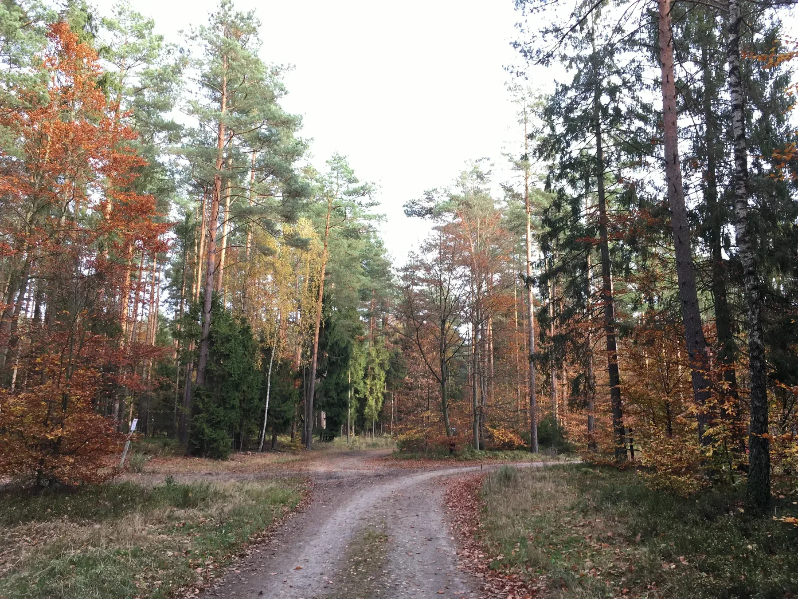

Od dymu nad puszczą do wsi szkatułowej
Siemiany są młodsze niż wiele średniowiecznych miejscowości Pojezierza Iławskiego, ale ich historia zaczyna się zanim w 1700 r. formalnie założono wieś.
Na mapie Caspara Hennenbergera z 1576 r. w rejonie dzisiejszych lasów siemiańskich widnieje zapis „Schwalge W.”. Regionaliści interpretują go jako leśną wartownię w obszarze określanym słowem związanym z dymem i smugą. To dobrze pasuje do obecności smolarzy i wypalania węgla drzewnego.
W 1700 r. książę Prus Fryderyk III, późniejszy król Fryderyk I, lokował Siemiany jako wieś szkatułową. Dochody z takich osad trafiały bezpośrednio do książęcej szkatuły. Akt lokacyjny przyznawał Christophowi Bieberowi i osadnikom 30 włók ziemi na prawie chełmińskim. Ratyfikacja lokacji nastąpiła w 1704 r.
„Schwalge W.” na mapie Hennenbergera - ślad leśnej wartowni i dawnej gospodarki smolarskiej.
Lokacja Siemian jako wsi szkatułowej w puszczy między Jeziorakiem a leśnymi smolarniami.
Ratyfikacja przywileju lokacyjnego przez króla Prus Fryderyka I.
Powstają szkoły w Siemianach i Jerzwałdzie; późniejsze raporty wizytatorów opisują obie miejscowości jako wsie polskie.
W Siemianach zostaje utworzone nadleśnictwo.
Wieś liczy 54 domy i ma już wyraźny charakter leśno-rybacki.
Konfirmacja w parafii dobrzyckiej, do której należą Siemiany, odbywa się jeszcze po polsku.
Źródła rozróżniają Stare Siemiany - królewską gajówkę - oraz Nowe Siemiany z 56 domami i około 290 mieszkańcami.
Powstaje okręg administracyjny Gerswalde; jego pierwsza siedziba znajduje się w Siemianach.
W Siemianach rodzi się Adolf Tetzlaff, późniejszy pionier turystycznej żeglugi na Kanale Elbląskim.
Przedsiębiorstwo Tetzlaffa rozpoczyna regularne rejsy turystyczne po Kanale Elbląskim i wodach Oberlandu.
Edward Stachura przyjeżdża na spotkanie autorskie i spotyka się ze Zbigniewem Nienackim w Cyraneczce.
Rozpoczyna się Festiwal Nad Jeziorakiem, który na stałe wpisuje się w letni rytm miejscowości.
Przy leśnej drodze staje czwarta wersja Białego Chłopa, wykonana na zlecenie Nadleśnictwa Susz.
Pierwsi mieszkańcy i polski język
Źródła dotyczące osadnictwa wskazują, że znaczna część pierwszych mieszkańców była Polakami sprowadzonymi z ziem polskich. W 1739 r. założono szkoły w Siemianach i Jerzwałdzie, a późniejsze raporty wizytatorów określały obie miejscowości jako wsie polskie.
Jeszcze w XIX wieku polszczyzna była obecna w życiu religijnym okolicy. W parafii dobrzyckiej, do której należały Siemiany, konfirmacja w 1819 r. odbywała się po polsku. Z czasem język niemiecki wypierał polski, a część dawnych polskich nazw topograficznych została zastąpiona niemieckimi.
Las, ryby i Nadleśnictwo Siemiany
Początki wsi były związane z lasem, smolarstwem i wypalaniem węgla drzewnego. W XVIII wieku Siemiany miały już także charakter rybacki. W 1780 r. utworzono tu nadleśnictwo, a w 1785 r. wieś liczyła 54 domy.
Dokumenty z 1820 r. rozróżniają Stare i Nowe Siemiany. Stare Siemiany były królewską gajówką, a Nowe Siemiany liczyły 56 domów i około 290 mieszkańców. W okresie międzywojennym państwowe Nadleśnictwo Siemiany obejmowało ponad 6 tys. ha lasów i kilka leśnictw.

Siemiany jako lokalny ośrodek
W 1874 r. powstał okręg administracyjny Gerswalde obejmujący Jerzwałd, Matyty i Siemiany wraz z okolicznymi majątkami. Początkowo siedziba administracji znajdowała się w Siemianach, co pokazuje, że miejscowość pełniła funkcję większą niż tylko rybacka wieś.
W 1888 r. urodził się tu Adolf Tetzlaff, późniejszy pionier żeglugi pasażerskiej na Kanale Elbląskim i wodach Pojezierza Iławskiego.
Jeziorak był drogą
Jeziorak przez stulecia łączył miejscowości leżące nad jego brzegami. W pierwszej połowie XX wieku po jeziorze kursowały statki pasażerskie. Przedwojenne materiały wymieniają m.in. trasę Zalewo - Siemiany - Iława oraz Zalewo - Siemiany - Wieprz.
To ciekawy kontrast z dzisiejszym obrazem jeziora jako miejsca wypoczynku: dawniej woda była równocześnie drogą transportową, miejscem pracy rybaków i częścią większego systemu połączonego z Kanałem Elbląskim.
Jeziorak jako archipelag i szlak wodny →Wyspy, mapy i historia żeglugi.Nienacki, Stachura i Cyraneczka
Powojenna tożsamość Siemian jest mocno związana z kulturą. Zbigniew Nienacki mieszkał w pobliskim Jerzwałdzie, a krajobraz północnego Jezioraka przenikał do jego twórczości. Realne miejsca z okolicy można dziś składać w literacką mapę Pana Samochodzika.
W styczniu 1979 r. Edward Stachura przyjechał do Siemian na spotkanie autorskie. Po nim spotkał się ze Zbigniewem Nienackim w legendarnej Cyraneczce. Stachura polubił wieś na tyle, że zgodził się objąć stanowisko bibliotekarza w Siemianach, ale planu nie zdążył zrealizować.
Biały Chłop
Charakterystyczna figura stojąca przy leśnej drodze stała się lokalnym symbolem i punktem orientacyjnym. Jej kolejne wersje znikały i wracały. Tablica historyczna w Siemianach podaje, że obecna, czwarta figura została wykonana w 2022 r. na zlecenie Nadleśnictwa Susz.
Od leśnej i rybackiej wsi do letniska
Po wojnie Siemiany stopniowo zmieniały się w miejscowość wypoczynkową. W drugiej połowie XX wieku powstawały ośrodki, domki letniskowe i infrastruktura dla żeglarzy. Cyraneczka stała się jednym z miejsc, które do dziś wracają we wspomnieniach dawnych bywalców.
Od 2006 r. odbywa się Festiwal Nad Jeziorakiem. Dzisiejsze Siemiany łączą więc kilka warstw naraz: starą gospodarkę leśną, rybołówstwo, żeglarstwo, literaturę i współczesny slow life.
Siemiany wtedy i dziś
W lokalnych wspomnieniach Siemiany lat 80. i 90. pachną smażoną rybą, piwem, dymem z ogniska i wieczorami, które zaczynały się od obiadu, a kończyły dużo później.
Kufloteka / Piwalon
Oszklony pawilon przy plaży, znany też jako Widokowa, Kufelek czy Akwarium. Wspomnienia opisują go jako ważny punkt spotkań żeglarzy w latach 80. i 90.
Cyraneczka
Przez lata była jednym z najbardziej rozpoznawalnych lokali w Siemianach - miejscem na obiad, spotkanie, muzykę i długie wieczory. Dziś jest przede wszystkim częścią lokalnej pamięci.
Szopa
Zaczynała od baru urządzonego w starej szopie i kilku stolików. Z czasem stała się jednym z symboli sezonowych Siemian.
Mini-Bar, Drink-Bar i inne
Po drodze pojawiały się i znikały małe bary, budki i sezonowe miejsca. Turystyczny charakter wsi nie zaczął się wraz z Ekomariną.
To lokalna historia obyczajowa oparta na wspomnieniach publikowanych jako „szlak siemiańskich knajp”. Traktujemy ją jako pamięć miejsca, nie jako aktualny przewodnik gastronomiczny. Przeczytaj archiwalne wspomnienie ↗
Historia, którą można przejść pieszo
Najciekawsze jest to, że wiele wątków nie wymaga muzealnej gabloty. Można stanąć przy Białym Chłopie, przejść dawnymi leśnymi drogami, spojrzeć z Siemian na Lipowy Ostrów, dojść do Solnik i Jeziora Jasnego albo pojechać do Jerzwałdu.